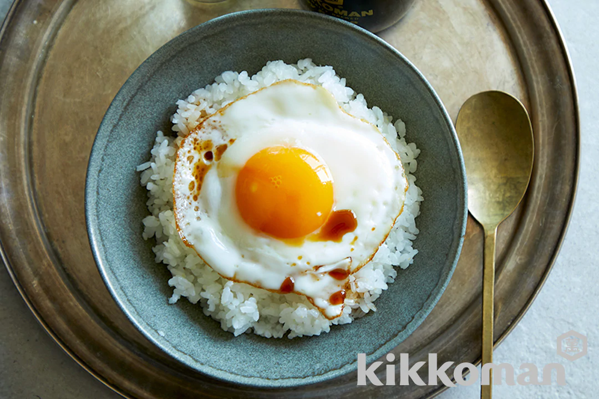

Eggs over Rice

Description
This dish is a quick and easy one (if the rice is already done). With a minimal
amount of ingredients you can count on one hand you'll be grubbing in just a few minutes.
Enjoy this nice dish with a nice source of protein and carbs.
Ingredients
Simple steps to get this on your plate and in your tummy.
- Firstly, let's start with if you have some rice ready. If not then get a cup or two of rice cooked
up.
- You'll need a hot pan with some oil going.
- Let's get crackin'. And an egg in fact, cracked on the pan cooking sunny side up (only cooking
the one side.
- With a ready bowl of rice slide or get that nice sunny side well crusted egg on that rice.
- Top it off with a bit of soy sauce and by choice for some spicy flavor siracha.